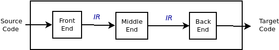
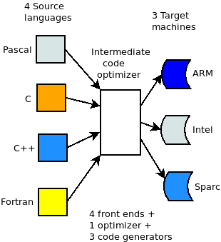
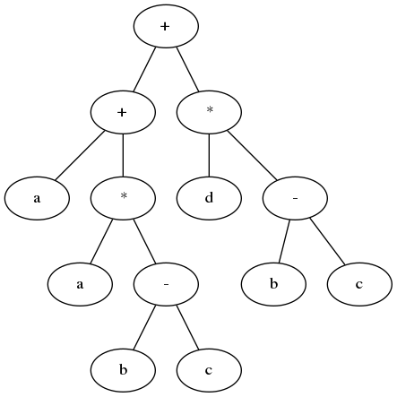

Compiler Optimizations
Sergey V. Ignatov
Created: 2018-11-21 Ср 13:28
Agenda
- What is Compiler Optimization
- History of Compiler Optimization
- Types of Compiler Optimization
- Factors affecting Compiler Optimization
- Techniques of Compiler Optimization
- Future scope
- Intermediate Representation
What Is Compiler Optimization
- What is Compiler Optimization
- History of Compiler Optimization
- Types of Compiler Optimization
What Is Compiler Optimization
- In computing, an optimizing compiler is a compiler that tries to minimize or maximize some attributes of an executable computer program.
- compiler optimization = code optimization
- Set of algorithms which transforms a program to an equivalent output program that uses fewer resources:
- minimizing program execution time
- minimizing memory use
- minimizing the power consumed by a program
History of Compiler Optimization
- One of the earliest notable optimizing compiler was that for BLISS (1970), which was described in The Design of an Optimizing Compiler (1975)
- By the 1980s optimizing compilers were sufficiently effective that programming in assembly language declined, and by the late 1990s for even sensitive code, optimizing compilers exceeded the performance of human experts.
Optimizations at Various Phases
- Source Code:
- Algorithms transformations can produce spectacular improvements.
- Profiling can be helpful to focus a programmer's attention on important code.
- Intermediate Code:
- Compiler can improve loops, procedure calls and address calculations.
- Typically only optimizing compilers include this phase.
- Target Code:
- Efficient choosing appropriate target-machine instructions.
- Efficient using registers.
- Peephole optimizations.
- Instruction scheduling.
Types of Compiler Optimization
- Peephole optimizations
- Local optimizations
- Global optimizations
- Loop optimizations
- Prescient store optimizations
- Interprocedural, whole-program or link-time optimizations
- Machine code optimizations
Peephole Optimizations
- Usually performed late in the compilation process after machine code has been generated. This form of optimization examines a few adjacent instructions to see whether they can be replaced by a single instruction or a shorter sequence of instructions.
Local Optimizations
- These only consider information local to a basic block. Since basic blocks have no control flow, these optimizations need very little analysis (saving time and reducing storage requirements), but this also means that no information is preserved across jumps.
Global Optimizations
- These are also called "intraprocedural methods" and act on whole function. This gives them more information to work with but often makes expensive computations necessary.
Loop Optimizations
- These act on the statements which make up a loop. Loop optimizations can have a significant impact because many programs spend a large percentage of their time inside loops.
Prescient Store Optimizations
- Allow store operations to occur earlier than would otherwise be permitted in the context of threads and locks. The process needs some way of knowing ahead of time what value will be stored by the assignment that it should have followed.
Interprocedural, Whole-Program or Link-Time Optimizations
- These analyze all of a program's source code. The greater quantity of information extracted means that optimizations can be more effective compared to when they only have access to local information.
Machine Code Optimizations
- These analyze the executable task image of the program after all of an executable machine code has been linked. Some of the techniques that can be applied in a more limited scope, such as macro compression are more effective when the entire executable task image is available for analysis.
- In addition to scoped optimizations there are two further general categories of optimization:
- Programming language-independent vs language-dependent
- Machine independent vs machine dependent
Programming Language-Dependent VS Language-Independent
- Most high-level languages share common programming constructs and abstractions: decision (
if,switch,case), looping (for,while,repeat…~until~,do…~while~), and encapsulation (structures, objects). - However, certain language features make some kinds of optimizations difficult. For instance, the existence of pointers in
CandC++makes it difficult to optimize array accesses.
Machine Independent VS Machine Dependent
- Many optimizations that operate on abstract programming concepts (loops, objects, structures) are independent of the machine targeted by the compiler, but many of the most effective optimizations are those that best exploit special features of the target platform. E.g.: Instruction which do several things at once, such as decrement register and branch if not zero.
Factors Affecting Compiler Optimization
- The machine itself.
- The architecture of the target CPU.
- The architecture of the machine.
- Intended use of the generated code.
The Machine Itself
- Many of the choices about which optimizations can and should be done depend on the characteristics of the target machine.
- It is sometimes possible to parameterize some of these machine dependent factors, so that a single piece of compiler code can be used to optimize different machines just by altering the machine description parameters.
The Architecture of the Target CPU
- RISC vs CISC
- Pipelines
- Number of functional units
The Architecture of the Machine
- Techniques such as inline expansion and loop unrolling may increase the size of the generated code and reduce code locality.
- Cache/Memory transfer rates: These give the compiler an indication of the penalty for cache misses.
- This is used mainly in specialized applications.
Intended Use of the Generated Code
- Debugging
- General purpose use
- Special-purpose use
- Embedded systems
- Debugging
- While writing an application, a programmer will recompile and test often, and so compilation must be fast.
- General Purpose Use
- Prepackaged software is very often expected to be executed on a variety of machines and CPUs that may share the same instruction set, but have different timing, cache or memory characteristics.
- Special-Purpose Use
- If the software is compiled to be used on one or a few very similar machines, with known characteristics, then the compiler can heavily time the generated code to those specific machines.
- Embedded Systems
- Embedded software can be tightly tuned to an exact CPU and memory size. So, for example, compilers for embedded software usually offer options that reduce code size at the expense of speed, because memory is the main cost of an embedded computer.
Future Scope
- Artifical intelligence will detect all the code which can be optimized.
Techniques of Compiler Optimizations
Instruction Combining
int i;
void f()
{
i++;
i++;
}
int i;
void f()
{
i += 2;
}
Constant Folding
int f()
{
return (3 + 5);
}
int f()
{
return 8;
}
Constant Propagation
void f()
{
x = 3;
y = x + 4;
}
void f()
{
x = 3;
y = 7;
}
Common SubExpression (CSE) Elimination
void f()
{
i = x + y + 1;
j = x + y;
}
void f()
{
t1 = x + y;
i = t1 + 1;
j = t1;
}
Integer Multiply Optimization
int f(int i)
{
return i * 4;
}
int f(int i)
{
return i < 2;
}
Integer Divide Optimization
int f(int i)
{
return i / 2;
}
int f(int i)
{
return i >> 1;
}
Loop Fusion
void f()
{
int i;
for (int i = 0; i < 100; i++)
a[i] += 10;
for (int i = 0; i < 100; i++)
b[i] += 10;
}
void f()
{
int i;
for (int i = 0; i < 100; i++) {
a[i] += 10;
b[i] += 10;
}
}
Dead Code Elimination
int global;
void f()
{
int i;
i = 1; // dead store
global = 1; // dead store
global = 2;
return;
global = 3; // unreachable
}
void f()
{
global = 2;
return;
}
Redundant Code Elimination
{
if (1 < 2) {
printf("i is smaller than 2");
} else {
printf("math is broken");
}
}
{
printf("i is smaller than 2");
}
Expression Simplification
void f(int i)
{
a[0] = i + 0;
a[1] = i * 0;
a[2] = i - i;
a[3] = 1 + i + 1;
}
void f(int i)
{
a[0] = i;
a[1] = 0;
a[2] = 0;
a[3] = 2 + i;
}
Forward Store
int sum;
void f()
{
sum = 0;
for (int i = 0; i < 100; i++) {
sum += a[i];
}
}
int sum;
void f()
{
register int t = 0;
for (int i = 0; i < 100; i++) {
t += a[i];
}
sum = t;
}
Loop Invariant Code Motion
#define BLACK 1
struct Triangle {...};
struct Triangle *triangle[];
{
int color;
for (int i = 0; i < 100; i++) {
color = BLACK;
Draw(t, color);
}
}
#define BLACK 1
struct Triangle {...};
struct Triangle *triangle[];
{
int color = BLACK;
for (int i = 0; i < 100; i++) {
Draw(t, color);
}
}
If Optimization
void f(int *p)
{
if (p)
g(1);
if (p)
g(2);
}
void f(int *p)
{
if (p) {
g(1);
g(2);
}
}
If Optimization
void f(int *p)
{
if (p) {
g(1);
if (p)
g(2);
}
void f(int *p)
{
if (p) {
g(1);
g(2);
}
}
new Expression Optimization
{
int a[];
a = new int[100];
}
{
// a not used, so not allocated
}
try...catch Block Optimization
try
{
a = (int)5;
}
catch (Exception e)
{
//
}
a = 5;
Loop Unrolling
for (int i = 0; i < 100; i++) {
g();
}
for (int i = 0; i < 100; i += 2) {
g();
g();
}
Unswitching
for (int i = 0; i < 100; i++) {
if (x)
a[i] = i;
else
b[i] = i;
}
if (x) {
for (int i = 0; i < 100; i++) {
a[i] = i;
}
} else {
for (int i = 0; i < 100; i++) {
b[i] = i;
}
}
Induction Variable Elimination
int a[SIZE];
int b[SIZE];
void f (void)
{
int i1, i2, i3;
for (i1 = 0, i2 = 0, i3 = 0; i1 < SIZE; i1++)
a[i2++] = b[i3++];
return;
}
int a[SIZE];
int b[SIZE];
void f (void)
{
int i1;
for (i1 = 0; i1 < SIZE; i1++)
a[i1] = b[i1];
return;
}
Strength Reduction
int s = 0, v = 0;
for (int i = 0; i < n; i++) {
v = 4 * i;
s = s + v;
}
int s = 0, v = 0;
for (int i = 0; i < n; i++) {
v = v + 4;
s = s + v;
}
Function Inlining
int add (int x, int y)
{
return x + y;
}
int sub (int x, int y)
{
return add (x, -y);
}
int sub (int x, int y)
{
return x - y;
}
Intermediate Representation
- An Intermediate Representation is a representation of a program “between” the source and target languages. A good IR is one that is fairly independent of the source and target languages, so that it maximizes its ability to be used in a retargetable compiler.
- Is translated from an Abstract Syntax Tree of a program.
- It should be easy to produce.
- It should be easy to translate to target machine code.

Why Use an IR?
- If a compiler translates the source language to its target machine language without having the option for generating intermediate code, then for each new machine, a full native compiler is required.
- Because translation appears to inherently require analysis and synthesis. Intermediate code eliminates the need of a new full compiler for every unique machine by keeping the analysis portion same for all the compilers.
- To break the difficult problem of translation into simpler, more manageable pieces.
Why Use an IR?
- To build retargetable compilers:
- We can build new backends for existing front-end (making the source language more portable across machines)
- We can build a new front-end for an existing back-end (so a new machine can quickly get a set of compilers for different source languages).
- We only have to write 2n half-compilers instead of n(n-1) full compilers.
- To perform machine independent optimizations. It becomes easier to apply the source code modifications to improve code performance by applying code optimization techniques on the intermediate code.
Why Use an IR?

Why Use an IR?
- Ideally, details of the source language are confined to the front end, and details of the target machine to the back end.

Intermediate Representations
- Decision in IR design affect speed and efficiency of the compiler
- Some important IR properties
- Ease of generation
- Ease of manipulation
- Procedure size
- Freedom of expression
- Level of abstraction
- The importance of different properties varies between compilers
- Selecting an appropriate IR for a compiler is critical
Styles of IR
- Intermediate representations are usually:
- Structural
- Flat, tuple-based, generally three-address code
- Flat, stack-based
- Or any combination of the above three
Structural IR
- Graphically oriented
- Heavily used in source-to-source translators
- Tend to be large
- Examples: Trees
Linear IR
- Pseudo-code for an abstract machine
- Level of abstraction varies
- Simple, compact data structures
- Easier to rearrange
- Examples: 3 address code
Hybrid IR
- Combination of graphs and linear code
- Attempt to take best of each
- Examples: Control Flow Graph
Abstract Syntax Tree
- An Abstract Syntax Tree (AST) is a way of representing the syntax of a programming language as a hierarchical tree-like structure. This structure is used for generating symbol tables for compilers and later code generation. The tree represents all of the constructs in the language and their subsequent rules. AST is the procedure's parse tree.
- For ease of manipulation, can use a linearized (operator) form of the tree: \(x - 2*y\) \(\rightarrow\) \(x 2 y *\) - postfix form
Directed Acyclic Graphs (DAGs)
- Directed Acyclic Graph (DAG) is a variant of Abstract Syntax Tree (AST) where nodes are not duplicated and any given node may have more than one parent. It is very efficient at representing expressions and hence generate efficient code for the expression.
- Example: \(a + a * (b - c) + (b - c) * d\)

Directed Acyclic Graphs (DAGs)
- The DAG can be built from the AST by doing a post-order traversal, constructing each node and linking to an existing node if the constructed already exists in the DAG, otherwise add the constructed node to the DAG
3-Address Code
- In 3-address code there is at most one operator on the right-hand of an instruction and at most three names. Hence, in 3-address code, the valid instructions for expressions are:
- x = y op z
- x = op y
- x = op
- Complex expressions in the source language can be translated in a sequence of 3-address code instructions.
- 3-address code is actually linearized version of an AST or DAG
- Typicall statements types:
- assignments: x = y op z, x = y[i]
- branches: goto L, if x relop y goto L
- procedure calls and procedure returns: param x, call p, return
- address and pointer assignments: x = &y, x = *y, *x = y
Stack Machine Code
- Can simplify IR by assuming implicit stack:
- z = x - 2 * y becomes
push z
push x
push 2
push y
multiply
substract
store
- Advantages:
- compact form
- introduced names are implicit, not explicit
- simple to generate and execute code
- Disadvantages:
- processors operate on registers, not stacks
- difficult to reuse values on the stack